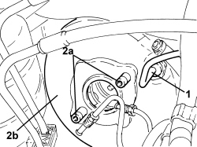
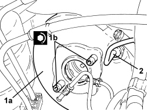
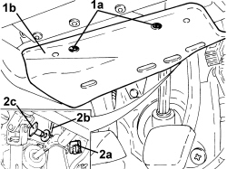
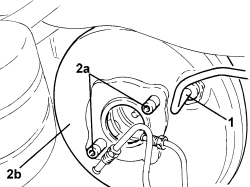
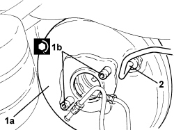

3330D03 SERVO BRAKE / BRAKE PUMP ASSEMBLY - R.R. FOR RIGHT DRIVE VERSIONS
- Path
- Procedures > 33 BRAKES > 3330 HYDRAULIC BRAKE SYSTEM > 3330D BRAKE VACUUM SYSTEM > 3330D03 SERVO BRAKE / BRAKE PUMP ASSEMBLY - R.R. FOR RIGHT DRIVE VERSIONS
- Kind
- repair procedure (removal / refitting; the operation number is the code)
- Applies to
- engines: 2.2, 1.9 JTD 16v, 2.4 JTD 20v; all production periods
- Interactive page
- https://sloeber94.github.io/elrnDB-fCrm/en/#/194004022
Applies to: engines: 1.9 JTD 16v, 2.4 JTD 20v; all production periods
 Removing
Removing
 Refitting
Refitting- Position the vehicle on a lift.
- Make sure that the ignition key is in the OFF position, then disconnect the battery terminal (-).
1. Undo the bolts (1a) and remove the guard under the dashboard (1b).
2. Remove the retaining clip (2a), release the return spring (2b) and extract the pin (2c) connecting the brake servo to the brake pedal.

Applies to: engines: 1.9 JTD 16v, 2.4 JTD 20v; all production periods
Op. 7055B54 UNDER ENGINE PROTECTION/GUARD - R.R.
Op. 3330C12 MASTER CYLINDER (PUMP) - R.R. FOR RIGHT HAND DRIVE VERSIONS
Op. 1048A10 AIR FILTER ASSEMBLY - R.R.
Op. 1016A10 SOUND-PROOFING COVER - R.R
Op. 1048A50 TURBOCHARGER AIR INTAKE PIPE - R.R.
Op. 1084A16 OIL DIPSTICK PIPE - R.R
Op. 1048A28 VACUUM AIR CIRCUIT RESONATOR PIPE - R+R
Op. 4450B04 RIGHT FRONT WHEEL - R.R
Op. 7055B66 ENGINE COMPARTMENT DUST COVER IN RIGHT FRONT WHEEL ARCH - R.R.
Op. 7055B91 RIGHT FRONT WHEEL ARCH LINER - R.R.
Op. 1092G10 SINGLE ENGINE BELT - R.R
Op. 1092A10 CRANKSHAFT PULLEY - R + R
Op. 1032B10 TOOTHED TIMING BELT - R + R FOR TIMING ADJUSTMENT OR REPLACEMENT
Op. 1060E10 DIESEL INJECTION PRESSURE PUMP - R.R.
Op. 1060E40 PRESSURE PUMP SUPPORT - R.R.
1. Disconnect the vacuum pipe from the brake servo.
2. Undo the bolts (2a) and remove the brake servo (2b).

Applies to: engines: 1.9 JTD 16v, 2.4 JTD 20v; all production periods
Refitting
Removing- Clean the surface of the brake servo and the engine compartment bulkhead.
1. Place the brake servo (1a) in its housing and fasten it tightening the bolts (1b) to the recommended torque.
Component | Fastening | dia | Value (daNm) | Validity |
|---|---|---|---|---|
Brake servo | Bolt | M8 | (pedals side) 1.8 - 2.2 |
2. Connect the vacuum pipe to the brake servo.

Applies to: engines: 1.9 JTD 16v, 2.4 JTD 20v; all production periods
Op. 1060E40 PRESSURE PUMP SUPPORT - R.R.
Op. 1060E10 DIESEL INJECTION PRESSURE PUMP - R.R.
Op. 1032B10 TOOTHED TIMING BELT - R + R FOR TIMING ADJUSTMENT OR REPLACEMENT
Op. 1092A10 CRANKSHAFT PULLEY - R + R
Op. 1092G10 SINGLE ENGINE BELT - R.R
Op. 7055B91 RIGHT FRONT WHEEL ARCH LINER - R.R.
Op. 7055B66 ENGINE COMPARTMENT DUST COVER IN RIGHT FRONT WHEEL ARCH - R.R.
Op. 4450B04 RIGHT FRONT WHEEL - R.R
Op. 1048A28 VACUUM AIR CIRCUIT RESONATOR PIPE - R+R
Op. 1084A16 OIL DIPSTICK PIPE - R.R
Op. 1048A50 TURBOCHARGER AIR INTAKE PIPE - R.R.
Op. 1016A10 SOUND-PROOFING COVER - R.R
Op. 1048A10 AIR FILTER ASSEMBLY - R.R.
Op. 3330C12 MASTER CYLINDER (PUMP) - R.R. FOR RIGHT HAND DRIVE VERSIONS
Op. 7055B54 UNDER ENGINE PROTECTION/GUARD - R.R.
- Place the pin connecting the brake servo to the brake pedal in its housing, connect the return spring and fit the retaining clip.
- Place the guard under the dashboard back in its housing and secure it using the bolts.
- Connect the negative battery terminal.
Op. 0010T64 BRAKE AND/OR CLUTCH FLUID CHECK LEVEL AND TOP UP AS NECESSARY
Op. 0010T65 HYDRAULIC BRAKE SYSTEM - BLEED AIR
- Remove the vehicle from the lift.
Applies to: engines: 2.2; all production periods
Removing
Refitting- Position the vehicle on a lift.
- Make sure that the ignition key is in the OFF position, then disconnect the battery terminal (-).
1. Undo the bolts (1a) and remove the guard under the dashboard (1b).
2. Remove the retaining clip (2a), release the return spring (2b) and extract the pin (2c) connecting the power steering to the brake pedal.

Applies to: engines: 2.2; all production periods
Op. 7055B54 UNDER ENGINE PROTECTION/GUARD - R.R.
Op. 3330C12 MASTER CYLINDER (PUMP) - R.R. FOR RIGHT HAND DRIVE VERSIONS
Op. 1072C16 EXHAUST MANIFOLD WITH CATALYTIC CONVERTER - R.R.
1. Disconnect the vacuum pipe from the brake servo.
2. Undo the bolts (2a) and remove the brake servo (2b).

Applies to: engines: 2.2; all production periods
Refitting
Removing- Clean the surface of the brake servo and the engine compartment bulkhead.
1. Place the brake servo (1a) in its housing and fasten it tightening the bolts (1b) to the recommended torque.
Component | Fastening | dia | Value (daNm) | Validity |
|---|---|---|---|---|
Brake servo | Bolt | M8 | (pedals side) 1.8 - 2.2 |
2. Connect the vacuum pipe for the brake servo.

Applies to: engines: 2.2; all production periods
Op. 1072C16 EXHAUST MANIFOLD WITH CATALYTIC CONVERTER - R.R.
Op. 3330C12 MASTER CYLINDER (PUMP) - R.R. FOR RIGHT HAND DRIVE VERSIONS
Op. 7055B54 UNDER ENGINE PROTECTION/GUARD - R.R.
- Place the pin connecting the brake servo to the brake pedal in its housing, connect the return spring and fit the retaining clip.
- Place the guard under the dashboard back in its housing and secure it using the bolts.
- Connect the negative battery terminal.
Op. 0010T64 BRAKE AND/OR CLUTCH FLUID CHECK LEVEL AND TOP UP AS NECESSARY
Op. 0010T65 HYDRAULIC BRAKE SYSTEM - BLEED AIR
- Remove the vehicle from the lift.
Topics linked from this page (17)
- 0010T64 BRAKE AND/OR CLUTCH FLUID CHECK LEVEL AND TOP UP AS NECESSARY
- 0010T65 HYDRAULIC BRAKE SYSTEM - BLEED AIR
- 1016A10 SOUND-PROOFING COVER - R.R
- 1032B10 TOOTHED TIMING BELT - R + R FOR TIMING ADJUSTMENT OR REPLACEMENT
- 1048A10 AIR FILTER ASSEMBLY - R.R.
- 1048A50 TURBOCHARGER AIR INTAKE PIPE - R.R.
- 1060E10 DIESEL INJECTION PRESSURE PUMP - R.R.
- 1060E40 PRESSURE PUMP SUPPORT - R.R.
- 1072C16 EXHAUST MANIFOLD WITH CATALYTIC CONVERTER - R.R.
- 1084A16 OIL DIPSTICK PIPE - R.R
- 1092A10 CRANKSHAFT PULLEY - R + R
- 1092G10 SINGLE ENGINE BELT - R.R
- 3330C12 MASTER CYLINDER (PUMP) - R.R. FOR RIGHT HAND DRIVE VERSIONS
- 4450B04 RIGHT FRONT WHEEL - R.R
- 7055B54 UNDER ENGINE PROTECTION/GUARD - R.R.
- 7055B66 ENGINE COMPARTMENT DUST COVER IN RIGHT FRONT WHEEL ARCH - R.R.
- 7055B91 RIGHT FRONT WHEEL ARCH LINER - R.R.